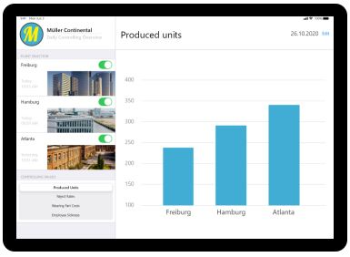
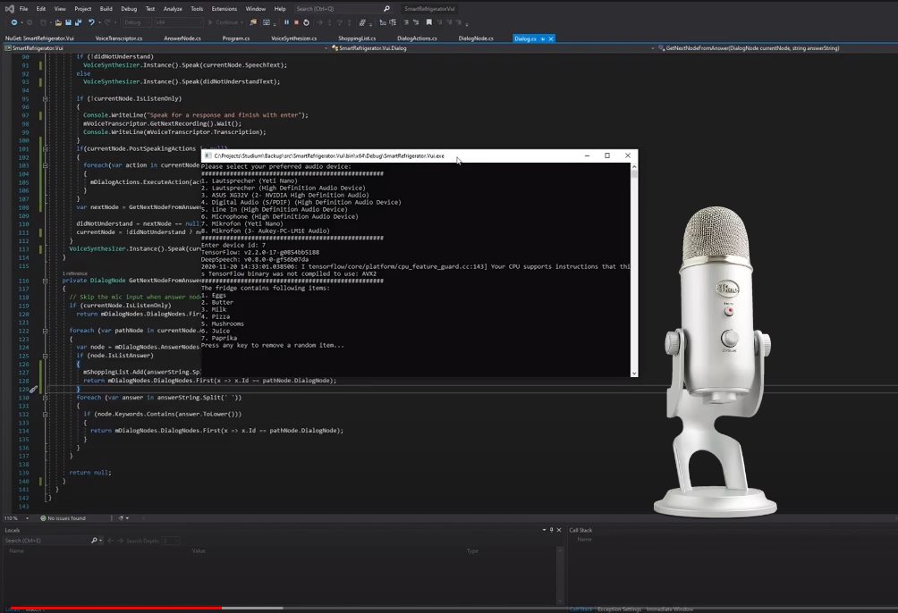
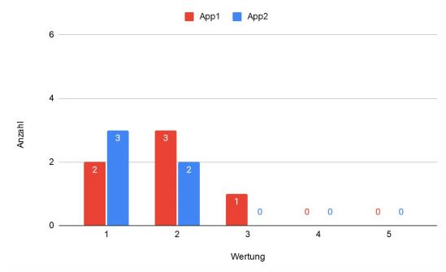
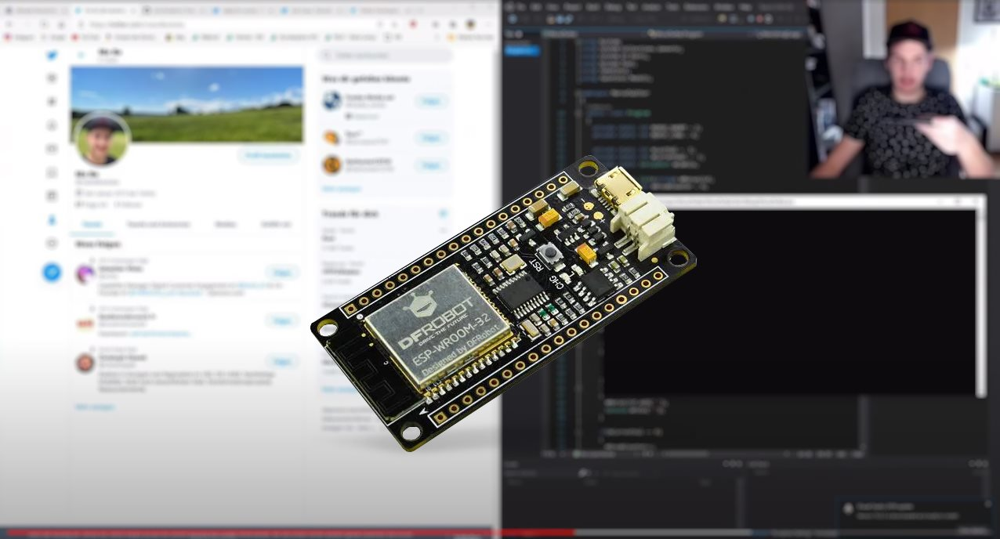

Graphical User Interface (GUI)
Für einen fiktiven Anwendungsfall einer fiktiven Firma sollte ein Prototyp für ein Präsentationssystem entworfen werden.
Die Firma besitzt drei Werke, zu denen täglich verschiedene Zahlen präsentiert werden.
Um nicht nur nackte Excel Dateien zu präsentieren, kommt dieses System zum Einsatz.
Im Teil "Dokumentation" werden die Prototypen genauer erklärt.
Voice User Interface (VUI)
Wir sollten uns überlegen, welche sinnvollen Anwendungsfälle mithilfe von Voice User Interfaces (VUIs) umgesetzt werden könnten.
In meinem Beispiel wird ein Sprachassistent gestartet, sobald ein Kühlschrank geöffnet wird und die Anzahl der vorhandenen Lebensmittel einen Grenzwert unterschritten hat.
Es folgt ein sprachlicher Dialog, in dem Lebensmittel auf die Einkaufsliste gesetzt werden können, oder z.B. direkt Essen beim Lieferdienst bestellt werden kann.
Im Teil "Projekt Link & Video" wird ein Dialog anhand eines Beispiels gezeigt, sowie die Technik dahinter erklärt.
A/B Testing
Um den oben genannten GUI Prototyp an Probanden zu testen, wurde ein A/B Testing durchgeführt.
Sowohl diese GUI, als auch eine weitere die das selbe Problem lösen sollte, wurden an unterschiedlichen Personengruppen getestet.
Die Methodik, sowie die Ergebnisse sind unter "Testergebnis" einsehbar.
Internet of Things
In der letzten Aufgabe des Semesters konnten wir mit IoT Geräten experimentieren.
Dazu wurde uns ein ESP32 zur Verfügung gestellt, mit welchem wir einen Mikroprozessor via. Arduino IDE programmieren konnten.
Auch hier stand uns frei jede Idee umzuesetzen die uns so einfiel. Im nachfolgenden Video unter "Implementierung" wird das Morse Twitter Miniprojekt vorgestellt.